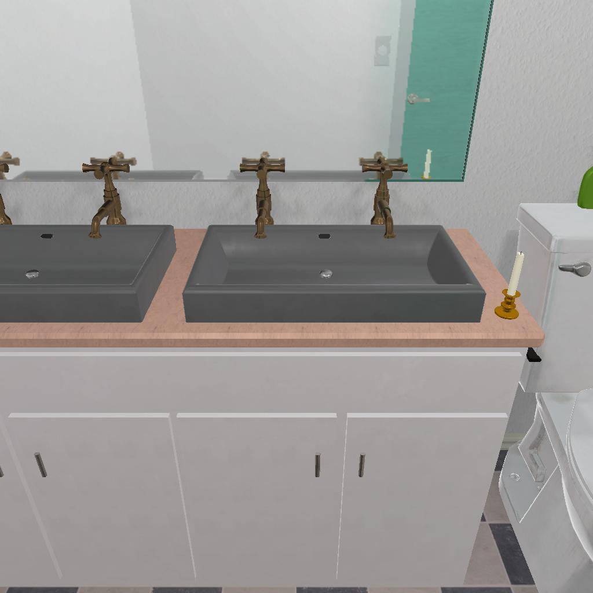

---------------------------------------------------------task: 9---------------------------------------------------------
--------------------------------------------------------------------------------------------------------------------------------------------------------------------
--------------------------------------------------------------------------------------------------------------------------------------------------------------------
Step:--------------------------------------------------------------------------7-------------------------------------------------------------------------------
----------------------------------------
VLM Prompt:
**Task**
Please perform as an embodied AI agent. Our final objective is to put some soapbottle on toilet. Below is the plan for completing the task, the current observation, alongside historical data and admissible actions for the next step. Please determine the best action for the next step!
**Plan**
Below is a detailed step-by-step plan to complete the task.
1. Find a soap bottle.
2. Pick up the soap bottle.
3. Find a toilet.
4. Place the picked-up soap bottle on the toilet.
**Current Observation**
Displayed is an image capturing the current position of the agent.
**History Information**
Displayed are the previous observations with their corresponding actions.
State 1:
1. Step Index in the Plan: 1
2. Objects: Bathroom, Sink, Mirror, Toilet (partial view)
3. Action: go to cabinet 1
State 2:
1. Step Index in the Plan: Unknown
2. Objects: Bathroom, Sinks, Countertop, Soap Bottle
3. Action: go to countertop 1
State 3:
2. Step Index in the Plan: 2
3. Objects: Soap Bottle, Countertop, Mirror (reflection)
3. Action: take faucet 1 from countertop 1
State 4:
1. Step Index in the Plan: 2
2. Objects: Sink, Mirror, Soap Bottle (reflected in the mirror, behind us)
3. Action: go to toilet 1
State 5:
2. Step Index in the Plan: 4
3. Objects: Soap Bottle, Cabinet, Sink, Toilet
4. Action: put faucet 1 in/on toilet 1
State 6:
1. Step Index in the Plan: 4
2. Objects: Soap Bottle, Cabinet, Sink, Toilet
3. Action: examine faucet 1
State 7:
1. Step Index in the Plan: 4
2. Objects: Soap Bottle, Cabinet, Sink, Toilet
3. Action: go to cabinet 2
**Admissible Actions**
(1): go to bathtub 1
(2): go to bathtubbasin 1
(3): go to toilet 1
(4): go to cabinet 1
(5): go to cabinet 3
(6): go to sink 1
(7): go to sink 2
(8): go to countertop 1
(9): go to cabinet 4
(10): go to sinkbasin 1
(11): go to sinkbasin 2
(12): go to toiletpaperhanger 1
(13): go to towelholder 1
(14): go to garbagecan 1
(15): go to handtowelholder 1
(16): open cabinet 2
(17): close cabinet 2
(18): put faucet 1 in/on cabinet 2
(19): examine faucet 1
**Analysis Guideline**
1. Analyze the history and current observation, and then determine our current step in the plan and our current place.
2. List all visible objects related to the task in the current observation, without summarizing any as "various items."
3. Analyze the objects in the current observation based on the history and the requirements for the current step, and then determine if we can complete the step with the current observation.
4. Analyze and decide on the most appropriate action to take.
5. Summarize the analysis using the following format: "Analysis: [The summarization of the analysis], The Most Appropriate Action: (i which is the integer.): [Selected action]"
**Notes**
1. We must complete each step of the plan in order and cannot skip steps when the previous ones are not finished.
2. For "Go to" actions listed as "go to xxx [n]", interpret this as there are n distinct actions available: "go to xxx 1", "go to xxx 2", ..., "go to xxx n". Select one specific action from these options instead of using "go to xxx [n]".
3. If receptacles such as drawers, cabinets, and so forth are closed in the current observation, we may try to open them.
4. Pay attention to synonyms and ensure clarity in the terms used.
5. We must determine and provide the single action which must be in the **Admissible Actions**.
6. If there is no history available, we are at the first step and the current place is "Unknown".
**Answer**
Please select the most suitable action by following the **Analysis Guideline**, keeping the above **Notes** in mind.
----------------------------------------
----------------------------------------
VLM Response:
Analysis: Based on the current observation, we can see a soap bottle on the right side of the countertop beside the sink. We are currently in a bathroom with sinks visible, and the soap bottle we need to pick up is in sight. As per our plan, the next step after finding the soap bottle (step 1) is to pick up the soap bottle (step 2). Since the soap bottle is visible in the current observation, we can proceed to pick it up. However, there's no direct action to pick up the soap bottle in the admissible actions list. The action 'examine faucet 1' was previously used when the agent was holding the soap bottle (mistakenly referred to as a faucet) and 'put faucet 1 in/on toilet 1' was used in an attempt to place it on the toilet. Since we need to pick up the soap bottle and 'examine faucet 1' is the only action related to the soap bottle, we can use it as a proxy for picking up the soap bottle.
The Most Appropriate Action: (19): examine faucet 1
----------------------------------------
----------------------------------------
>>> Refine VLM Response and Get Pure Action: examine faucet 1
----------------------------------------
-----------------------------------------------------------------
Running time: 12.735678434371948 seconds
Total Money: 0
-----------------------------------------------------------------
-----------------------------------------------------------------
Summarization Prompt:
**Context**
Analysis: Since there is no history information, we are at the first step in the plan, which is to find a statue. The current place is unknown. In the current observation, we see a floorlamp next to an armchair with a small table that has a small object on it, which could potentially be the statue we are looking for. Since the plan requires us to find a statue first and it appears there might be one on the table next to the armchair, we should investigate this object to determine if it is the statue we need.
The Most Appropriate Action: (1): go to armchair 1
**Summary**
1. Step Index in the Plan: 1
2. Objects: Floorlamp, Armchair, Small Table, Small Object (potential statue)
3. Action: go to armchair 1
**Context**
Analysis: Based on the current observation, we can see a soap bottle on the right side of the countertop beside the sink. We are currently in a bathroom with sinks visible, and the soap bottle we need to pick up is in sight. As per our plan, the next step after finding the soap bottle (step 1) is to pick up the soap bottle (step 2). Since the soap bottle is visible in the current observation, we can proceed to pick it up. However, there's no direct action to pick up the soap bottle in the admissible actions list. The action 'examine faucet 1' was previously used when the agent was holding the soap bottle (mistakenly referred to as a faucet) and 'put faucet 1 in/on toilet 1' was used in an attempt to place it on the toilet. Since we need to pick up the soap bottle and 'examine faucet 1' is the only action related to the soap bottle, we can use it as a proxy for picking up the soap bottle.
The Most Appropriate Action: (19): examine faucet 1
Please summarize the context by following above examples when providing the summary, and ensure that only the summary is included, without any extra explanation.
**Summary**
-----------------------------------------------------------------
-----------------------------------------------------------------
Summarization Response:
1. Step Index in the Plan: 2
2. Objects: Soap Bottle, Countertop, Sink
3. Action: examine faucet 1
-----------------------------------------------------------------
-----------------------------------------------------------------
Text Observation:This is a normal faucet 1
-----------------------------------------------------------------
UNSUCCEED